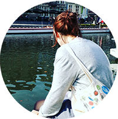

Formation
- MOOC Harvard via EdX
2020 - Introduction to Computer Science CS50 Initiation à l'algorithmie, au C et au Python
- MOOC OpenClassrooms
2020 -
HTML5 et CSS3
Apprentissage de l'HTML et du CSS à travers la construction et mise en ligne d'un site simple et responsive - Institut Français de Presse
2014-2016 -
Master en journalisme (sciences politiques et sociales) reconnu par la profession.
Double-spécialité Presse en ligne et Ecriture multi-médias - Mention AB - Université de Nantes
2010-2013 -
Licence en Langues Etrangères Appliquées (LEA) Anglais, allemand et russe - Mention AB
- L3 à l'Université de Toronto (Canada anglophone)
Expérience professionnelle
- Maddyness
Novembre 2019 - Janvier 2020 - Rédaction d'articles et enquêtes
- BFMTV.com
Avril 2017 - Novembre 2019 - Rédaction, community management, chefferie d'édition pour BFMTV.com
- Les Echos Start
Septembre 2016 - Février 2017 - Stagiaire puis pigiste: rédaction d'articles, présentation, tournage et montage de vidéos web (et Facebook Live)
- Agence France-Presse (AFP)
Juillet 2016 -
CDD Bourse AFP - Desk “Grande Nuit”: veille, revue de presse, édition et rédaction
Juin 2015 / Décembre 2015
Stagiaire au service Société (Juin) et à la COP 21 (Décembre) - Autres stages
Juillet 2013 - Juin 2016 - M le magazine du Monde, Slate.fr, Le Courrier de l'Ouest, l'Echo d'Ancenis, Radio Côte d'amour
- Jeune fille au pair
Septembre 2013 - Avril 2014 - Jeune fille au pair à Cork, en Irlande
Plus sur Linkedin